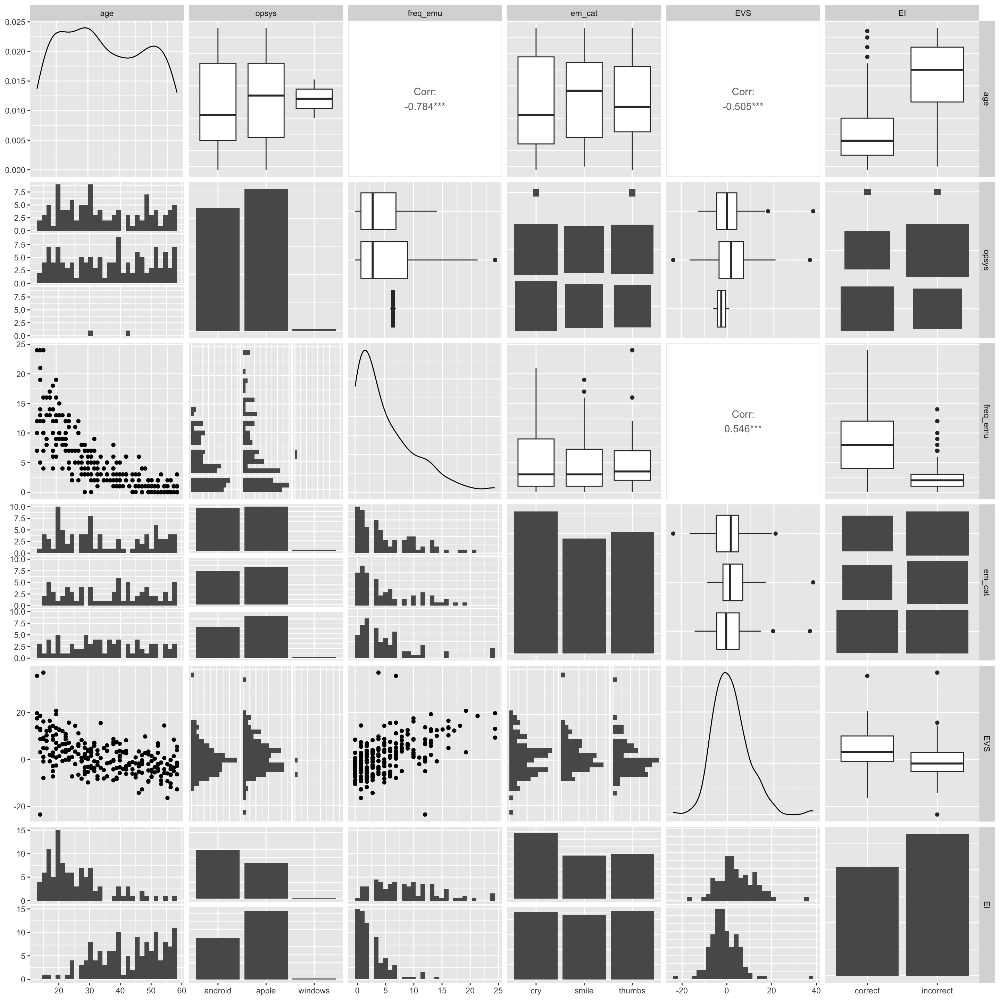

(JMEP; 16/11/2023 - midnight zoomies) found this cool way of generating lm equation :0 equatiomatic
(JMEP; 16/11/2023 - midnight zoomies) Would be helpful if we could do all our code for each section in one chunk. Then we can call tables/figures where we need them and refer to numbers in inline code. Inline code example: NA (there is an NA in age, booo)
(JMEP; 16/11/2023 - midnight zoomies) I looked into age. There is one NA, one person who is -100 years old and one that is 1 year old. I think we can reliably remove them (done in emoji_clean). There are also a bunch (23 to be exact) that are under 18 (between 14 and 17), whom I am not sure if we should remove?? I also noticed some other unusual stuff. Frequency ratings below 0, and a typo in “Apple” for one of the operating systems (“Appple”). There are also only two Windows users which isn’t really helpful in terms of analysis - might wanna exclude them.
#Code to possibly be deleted: 
#probably to delete but just in case For each emoji category, we found no significant difference between the observed proportions of Apple and Android users, and a hypothesised set of equal proportions. The results for each emoji category are as follows: loudly crying face emoji [😭]: n = 88, proportionApple = 51.14 %, proportionAndroid = 48.86 %; \(\chi^2\) (1) = 0.05, p = 0.831; slightly smiling face emoji [🙂]: n = 72, proportionApple = 52.78 %, proportionAndroid = 47.22 %; \(\chi^2\) (1) = 0.22, p = 0.637; thumbs up emoji [👍]: n = 75, proportionApple = 57.33 %, proportionAndroid = 42.67 %; \(\chi^2\) (1) = 1.61, p = 0.204.